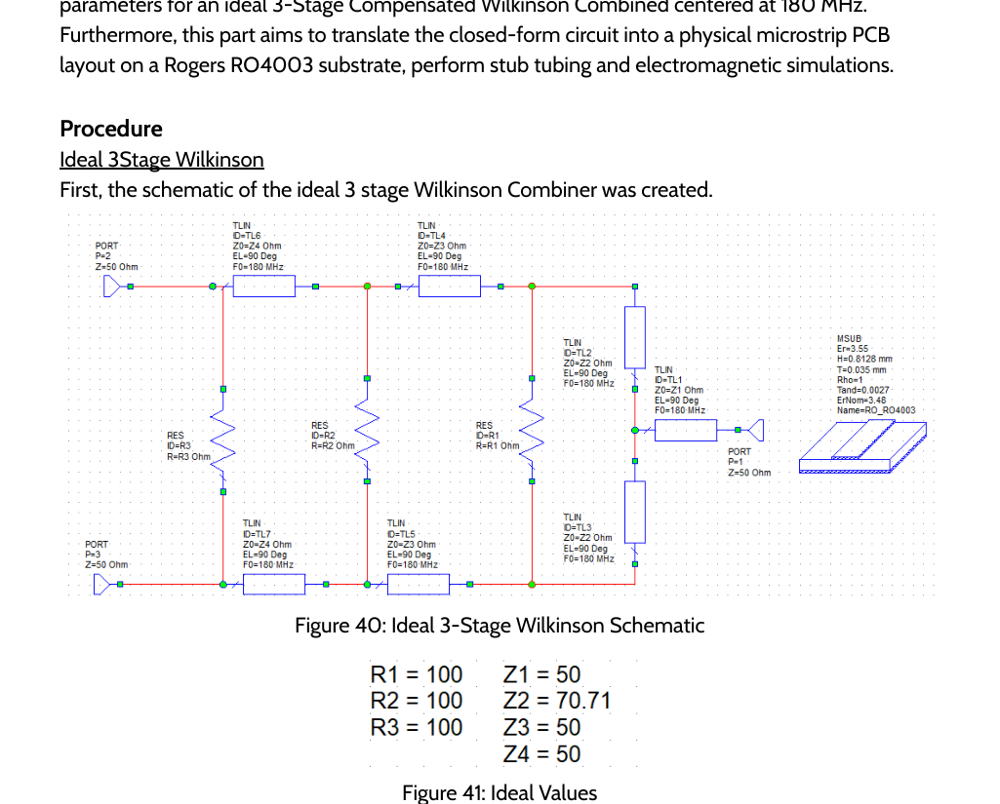
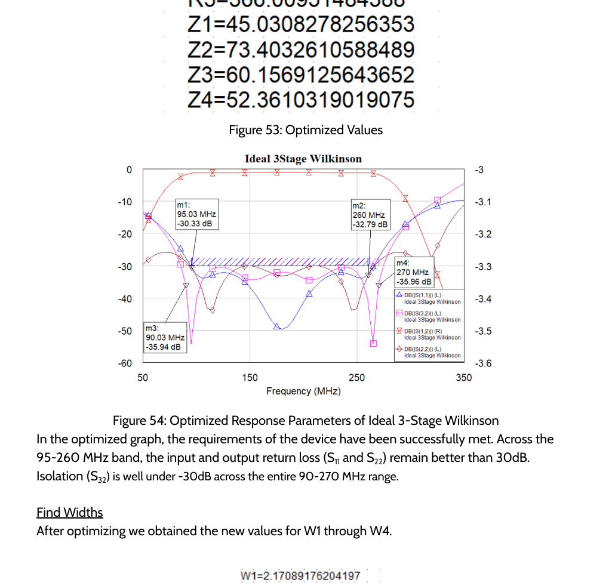
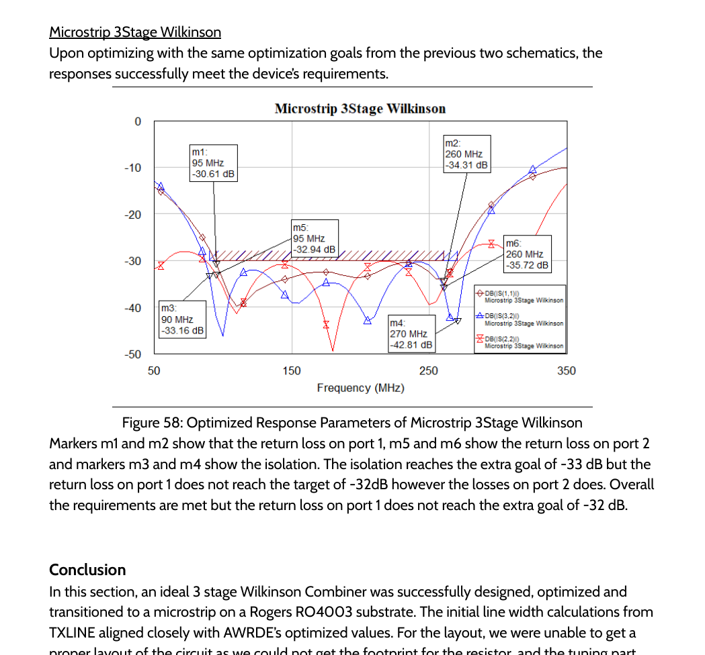

Initial calculations
Calculated starting characteristic impedances and electrical lengths, then translated them into initial microstrip geometry using MATLAB and TXLINE.
Designed and simulated a three-section Wilkinson RF power-divider/combiner network, evaluating impedance transformation, port matching, isolation, and broadband S-parameter behaviour before microstrip implementation.

Compared single- and multi-section Wilkinson topologies using analytical transmission-line synthesis and EM-aware microstrip modelling, with emphasis on return loss and output-port isolation over the design band.
The single-section divider established a baseline response. Cascading three impedance-transforming sections introduced additional degrees of freedom to tune match and isolation across the frequency range.
Used analytical impedance calculations, MATLAB, TXLINE, and AWR Design Environment to move from an ideal transmission-line network to a substrate-specific microstrip model.
Calculated starting characteristic impedances and electrical lengths, then translated them into initial microstrip geometry using MATLAB and TXLINE.
Evaluated the simulated return-loss and isolation trade-offs as the Wilkinson network increased from one matching section to three.
Optimized transmission-line parameters in AWRDE and inspected frequency-dependent S-parameters, including matching and output-port isolation.
Mapped ideal transmission lines to Rogers RO4003 microstrip widths/lengths and re-simulated the physical transmission-line representation.
The plots report simulated circuit and microstrip responses after parameter tuning; they are not VNA measurements of fabricated hardware.


Completed analytical design and RF/microstrip simulation. The PCB layout remained constrained by resistor-footprint availability; fabrication and measured RF validation were outside the project scope.